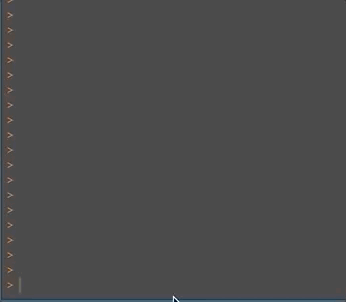

“One object to store them all, one object to find them, one object to query from and with ggplot2 visualize them.” (Lord Sauron)
pagoo is an encapsulated, object-oriented class system for analyzing bacterial pangenomes. It uses the R6 package as backend. It was designed in order to facilitate and speed-up the comparative analysis of multiple bacterial genomes, standardizing and optimizing routine tasks performed everyday. There are a handful of things done everyday when working with bacterial pangenomes: subset, summarize, extract, visualize and store data. So, pagoo is intended to facilitate these tasks as much as possible.
The main idea behind pagoo is that, once you have reconstructed a pangenome, all the information and basic methods are embebed into a single object. To query this object, you simply use the $ symbol as if where a named list in R.

This idea is common in other object-oriented programming languages, but not in R for final users. We have exploited R6 package to take advantage of this kind of programming and make it available to the R pangenomics community.
pagoo is composed by three R6 classes, each one more complex than the other, and that the more basic are inherited by the more complex ones. The most basic one, PgR6, contains basic subset methods and data manipulation functions. The second one, PgR6M inherits all the methods and fields from the previous one, and incorporates statistical and visualization methods. The last one, PgR6MS, inherits from PgR6M all its capabilities, and adds methods to manipulate DNA sequences.
A quick look to a pagoo object print can give us some clues of how is it composed:
<PgR6MS>
Inherits from: <PgR6M>
Public:
add_metadata: function (map = "org", data)
binomix_estimate: function (K.range = 3:5, core.detect.prob = 1, verbose = TRUE)
cg_exp_decay_fit: function (raref, pcounts = 10, ...)
clone: function (deep = FALSE)
cloud_clusters: active binding
cloud_genes: active binding
cloud_sequences: active binding
clusters: active binding
core_clusters: active binding
core_genes: active binding
core_level: active binding
core_seqs_4_phylo: function (max_per_org = 1, fill = TRUE)
core_sequences: active binding
dist: function (method = "bray", binary = FALSE, diag = FALSE, upper = FALSE,
drop: function (x)
dropped: active binding
fluidity: function (n.sim = 10)
genes: active binding
gg_barplot: function ()
gg_binmap: function ()
gg_curves: function (what = c("pangenome", "coregenome"), ...)
gg_dist: function (method = "bray", ...)
gg_pca: function (colour = NULL, ...)
gg_pie: function ()
initialize: function (data, org_meta, cluster_meta, core_level = 95, sep = "__",
organisms: active binding
pan_matrix: active binding
pan_pca: function (center = TRUE, scale. = FALSE, ...)
pg_power_law_fit: function (raref, ...)
random_seed: active binding
rarefact: function (what = "pangenome", n.perm = 10)
recover: function (x)
runShinyApp: function ()
save_pangenomeRDS: function (file = "pangenome.rds", seqs.if.avail = TRUE)
sequences: active binding
shell_clusters: active binding
shell_genes: active binding
shell_sequences: active binding
summary_stats: active binding
write_pangenome: function (dir = "pangenome", force = FALSE)
Private:
.clusters: DataFrame
.data: DataFrame
.dropped: NULL
.level: 95
.organisms: DataFrame
.panmatrix: 1 1 1 1 1 1 1 1 1 0 1 0 1 1 0 1 1 1 1 1 1 1 1 1 1 1 1 1 ...
.sep: __
.sequences: DNAStringSet
version: package_version, numeric_versionYou can see that basically there are public and private fields/methods. In private, all raw data is stored. You will not have easy access to it. Instead, you will be able to access public functions and active bindings. Active bindings are functions that behave as it were variables, in this case they are querying private information and returning it to the user in a convinient way. Public methods
Pagoo works over the pangenome after it has been built with any pangenome reconstruction software. So, you can do it with the software of your preference. Despite we recommend Pewit, our own pangenome reconstruction software, pagoo can read-in the output of most popular and state-of-the-art pangenome softwares like Roary, Panaroo, panX and PIRATE. pagoo also runs a Shiny application that provides reactive interaction with the data and facillitates handling and visualization.
Currently, pagoo is only available at GitHub. The easiest way to install this package is by using devtools:
if (!require("devtools")) install.packages("devtools") devtools::install_github('iferres/pagoo')
We have tested pagoo in UNIX operating systems. However it should, we cannot warrant it fully works on Windows. Also, in the future we plan to put the code in CRAN and/or Bioconductor repositries.
All three classes are documented. You can access R help pages as with any other function:
but as R6 classes documentation is still not standarized, we recomend you to use the pagoo::pagoo() function to read the documentation from, and to to use it also instead of the raw classes.
?pagoo